Uniformity test on the Sphere
Let \(x_1, x_2, \ldots, x_n \sim F\) be a random sample with empirical distribution function \(\hat{F}\). We test the null hypothesis of uniformity on the \(d\)-dimensional sphere, i.e., \(H_0: F = G\) where \(G\) is the uniform distribution on the \(d\)-dimensional sphere \(\mathcal{S}^{d-1}\).
We compute the U-statistic estimate of the sample KBQD (Kernel-Based Quadratic Distance) \[ U_{n}=\frac{2}{n(n-1)}\sum_{i=2}^{n}\sum_{j=1}^{i-1}K_{cen}(\mathbf{x}_{i}, \mathbf{x}_{j}), \] then the first test statistic is given as \[T_{n}=\frac{U_{n}}{\sqrt{Var(U_{n})}},\] with \[ Var(U_{n})= \frac{2}{n(n-1)}\left[\frac{1+\rho^{2}}{(1-\rho^{2})^{d-1}}-1\right], \]
and the V-statistic estimate of the KBQD
\[
V_{n} = \frac{1}{n}\sum_{i=1}^{n}\sum_{j=1}^{n}K_{cen}(\mathbf{x}_{i},
\mathbf{x}_{j}),
\] where \(K_{cen}\) denotes the
Poisson kernel \(K_\rho\) centered with
respect to the uniform distribution on the \(d\)-dimensional sphere, that is \[
K_{cen}(\mathbf{u}, \mathbf{v}) = K_\rho(\mathbf{u}, \mathbf{v}) -1
\] and \[
K_\rho(\mathbf{u}, \mathbf{v}) =
\frac{1-\rho^{2}}{\left(1+\rho^{2}-2\rho
(\mathbf{u}\cdot \mathbf{v})\right)^{d/2}},
\]
for every \(\mathbf{u}, \mathbf{v} \in \mathcal{S}^{d-1} \times \mathcal{S}^{d-1}\).
We generated \(n=200\) observations from the uniform distribution on \(S^{d-1}\), with \(d=3\).
library(QuadratiK)
n <- 200
d <- 3
set.seed(2468)
z <- matrix(rnorm(n * d), n, d)
dat_sphere <- z/sqrt(rowSums(z^2))The pk.test is used for testing uniformity of the
generated sample, providing the data matrix as x and the
value of the concentration parameter rho.
##
## Poisson Kernel-based quadratic distance test of
## Uniformity on the Sphere
## Selected consentration parameter rho: 0.7
##
## U-statistic:
##
## H0 is rejected: FALSE
## Statistic Un: -0.9756673
## Critical value: 1.725683
##
## V-statistic:
##
## H0 is rejected: FALSE
## Statistic Vn: 14.89598
## Critical value: 23.22949The pk.test() function returns an object of class
pk.test. The show function displays the
computed statistics and the corresponding critical values.
The test correctly does not reject the null hypothesis of uniformity.
The summary function for the pk.test output
object provides the results of the performed test, and generates a
figure showing the qq-plots against the uniform distribution of each
variable with a table of standard descriptive statistics.
summary_unif <- summary(res_unif)##
## Poisson Kernel-based quadratic distance test of
## Uniformity on the Sphere
## Test_Statistics Critical_Value Reject_H0
## 1 -0.9756673 1.725683 FALSE
## 2 14.8959834 23.229487 FALSE
The figure automatically generated by the summary
function on the result of the test for uniformity displays the qq-plots
between the given samples and the uniform distribution with a table of
the standard descriptive statistics for each variable.
Multimodal example
The Poisson kernel-based test for uniformity exhibits excellent results especially in the case of multimodal distributions.
In this example, we generate data points from a mixture of 4 von Mises-Fisher distributions in 2 dimensions. The direction of the mean vectors for the distributions are set as (1, 0), (0, 1), (-1, 0), and (0, -1), with a concentration parameter \(\kappa=5\).
set.seed(2468)
# Define the mean directions of the 4 von Mises-Fisher distributions
means <- rbind(
c(1, 0),
c(0, 1),
c(-1,0),
c(0, -1)
)
# Define the concentration parameter (kappa)
kappa <- 5
# Generate 100 samples from a mixture of 4 von Mises-Fisher distributions
samples <- matrix(rmovMF(100, theta = kappa * means), ncol=2)We now compare the results of the pk.test function with
the Ajne and Bingham tests using the sphunif package.
# Run the pk.test from the QuadratiK package to test the data
pk_test_result <- pk.test(samples, rho=0.8)
# Run the Bingham and Ajne tests from the sphunif package
other_test_result <- unif_test(samples, type = c("Bingham", "Ajne"))
pk_test_result##
## Poisson Kernel-based quadratic distance test of
## Uniformity on the Sphere
## Selected consentration parameter rho: 0.8
##
## U-statistic:
##
## H0 is rejected: TRUE
## Statistic Un: 2.692594
## Critical value: 1.612663
##
## V-statistic:
##
## H0 is rejected: TRUE
## Statistic Vn: 15.14426
## Critical value: 12.8308
other_test_result## $Bingham
##
## Bingham test of circular uniformity
##
## data: samples
## statistic = 5.8674, p-value = 0.0532
## alternative hypothesis: scatter matrix different from constant
##
##
## $Ajne
##
## Ajne test of circular uniformity
##
## data: samples
## statistic = 0.28268, p-value = 0.3156
## alternative hypothesis: any non-axial alternative to circular uniformityIn this example, the Poisson kernel-based test statistics reject the null hypothesis, while the Bingham test and Ajne test obtain p-values equal to 0.0532 and 0.3156, respectively.
References
Ding, Y., Markatou, M. and Saraceno, G. (2023). “Poisson Kernel-Based Tests for Uniformity on the d-Dimensional Sphere.” Statistica Sinica. doi:10.5705/ss.202022.0347.